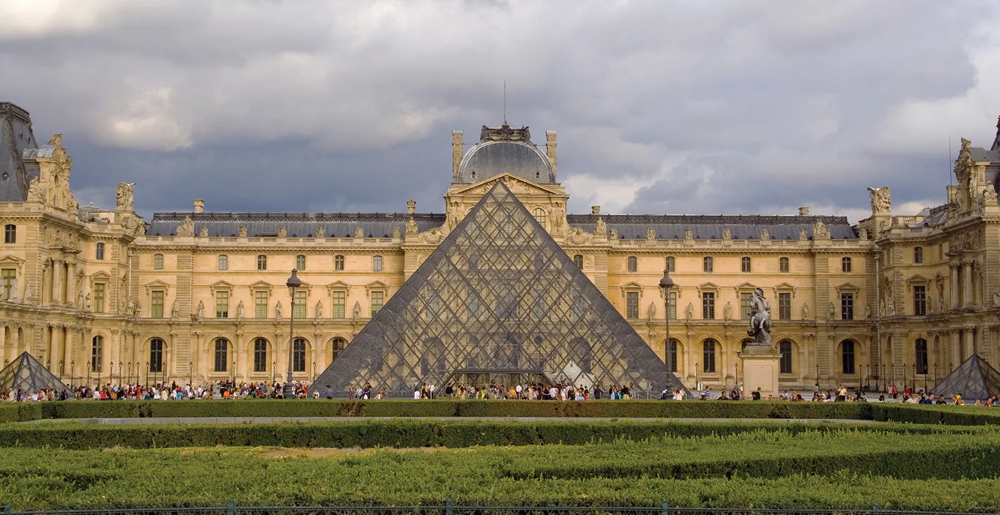

Louvre ou Museu do Louvre

Louvre ou Museu do Louvre (em francês: Musée du Louvre) é o maior museu de arte do mundo e um monumento histórico em Paris, França. Um marco central da cidade, está localizado na margem direita do rio Sena, no 1º arrondissement (distrito) da cidade. Aproximadamente 38 mil objetos, da pré-história ao século XXI, são exibidos em uma área de 72 735 metros quadrados. Em 2019, o Louvre recebeu 9,6 milhões de visitantes, o que o torna o museu mais visitado do mundo.
O museu está instalado no Palácio do Louvre, originalmente construído como o Castelo do Louvre nos séculos XII e XIII durante o reinado de Filipe II. Restos da fortaleza são visíveis no porão do museu. Devido à expansão urbana, a fortaleza acabou perdendo sua função defensiva e, em 1546, Francisco I a converteu na residência principal dos reis franceses. O edifício foi ampliado várias vezes para formar o atual Palácio do Louvre. Em 1682, Luís XIV escolheu o Palácio de Versalhes como sua casa, deixando o Louvre principalmente como um local para exibir a coleção real, incluindo, a partir de 1692, uma coleção de antigas esculturas gregas e romanas.Conheça mais...
.jpeg)
.jpeg)